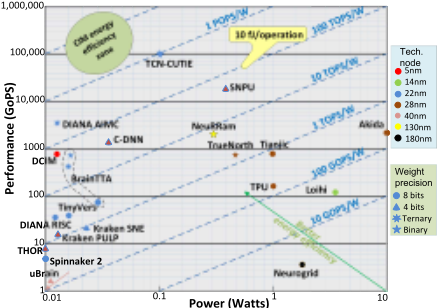
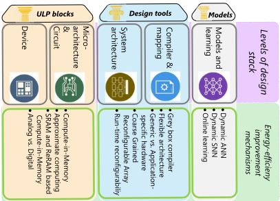
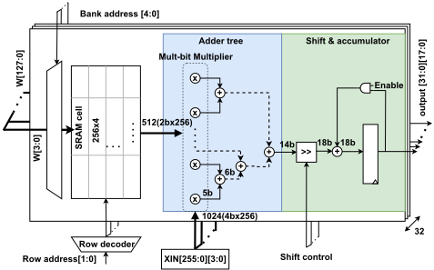
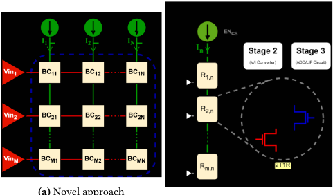
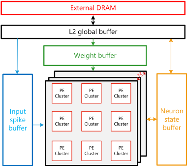
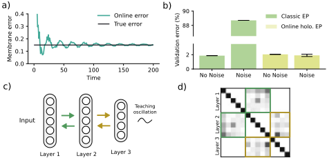

特邀报告：实现 PetaOps/W 级 Edge-AI 处理
论文针对边缘 AI SoC（Smart Edge Processor, SEP）的能效瓶颈：云端推理存在隐私、延迟与带宽问题，而电池供电的边缘设备受能耗与散热严格约束，现有 ANN 芯片能效接近 1 fJ/Op、SNN 芯片最好约 100 fJ/Op，且硬件需保持足够灵活性以应对未来 NN 模型。CONVOLVE 项目提出在设计栈各层（模型、在线学习、编译器、架构、微架构、电路、器件）协同创新，目标 100 倍能效提升并显著缩短设计时间。论文重点介绍三方面进展：SRAM 数字 CIM（Fibbinary 权重编码配合定制多比特乘法器削减 adder tree 功耗）与 RRAM 模拟 CIM（C3CIM 恒流读出 + 2T1R 单元）；缩小与 ANN 精度差距的 SNN 加速器（带 L1/L2 存储层级的 Mega 架构）；以及摆脱反向传播的在线学习（eligibility traces 对角 RTRL 近似、holomorphic EP）。关键结论包括 C3CIM 归一化后约 0.5 fJ/Op、Mega 架构 0.292 pJ/SOP。总体上这是一篇边缘 AI 处理器体系结构方向的特邀综述，与团队内存/互连 IP 主业无直接交集。
如何在电池供电、热耗散受限的边缘设备上实现超低功耗（ULP）AI 推理：现有边缘 AI 芯片能效距 fJ/Op 目标仍有差距（SNN 芯片最好约 100 fJ/Op），同时需对未来 NN 模型保持可编程性；此外模拟 CIM 器件对噪声与非理想性敏感，需要在线连续学习等手段增强硬件鲁棒性。
CONVOLVE 项目采用全设计栈协同方法（模型、在线学习、编译器、架构、微架构、电路、器件），论文聚焦三点：1) CIM 架构——SRAM 数字 CIM 用 Fibbinary 权重编码（禁止二进制表示中的连续 1，并放宽为不被同一乘法器访问即可）配合定制多比特乘法器削减 adder tree 功耗；RRAM 模拟 CIM 提出 C3CIM（Constant Current Crossbar CIM），采用恒定电流读出使每列读电流与选中行数无关，并用 2T1R 单元补偿访问晶体管非零电阻，还可移植到 FeFET 等其他 NVM；2) SNN 加速器——提出带存储层级的 Mega 架构（9 个 PE 集群 + input spike/weight/neuron state 的 L1 缓冲 + 全局 L2 存储），通过调度复用权重与状态提升能效；3) 在线学习——用基于 eligibility traces 的 RTRL 对角近似替代 BPTT，提出 holomorphic equilibrium propagation 缓解 EP 对基底噪声的敏感性，并探索局部学习规则。
C3CIM（RRAM CIM）实现 30 fJ/MAC（64 RRAMs per column、1-bit per RRAM 配置），按 1-bit×1-bit MAC 归一化约 0.5 fJ/Op
MNIST 上 BNN 模型（784×3136×10）平均每次推理能耗 14.6 nJ；SNN 模型（324×81×10、time steps=60）平均每次推理能耗 11.24 nJ
放宽 Fibbinary 权重约束后，4b/8b/16b 可用权重数量分别增加 12.5%、47.2%、154%；定制多比特乘法器比标准乘法器小 76%、功耗低 66%
Mega SNN 架构通过调度复用实现单输出通道 0.292 pJ/SOP，预期增加 32 个输出通道后能效将显著改善
项目级目标为 100 倍能效提升（CONVOLVE 目标值，非本文实测结果）
区别于单点优化的已有工作，CONVOLVE 强调从器件（RRAM/FeFET）到算法（SNN、免 BPTT 在线学习）的全栈协同框架。具体新意包括：C3CIM 的恒定电流读出使每列读电流与选中行数无关、2T1R 单元以互补输入补偿访问晶体管非零电阻并可后处理为常数偏移；Fibbinary 编码与定制多比特乘法器联合压缩 adder tree 功耗；带 L1/L2 存储层级与调度灵活性的 Mega SNN 架构；以及噪声鲁棒的 holomorphic EP 在线学习算法。
相关度级别：low
命中能力域：无明显对应
理由：论文主题为边缘 AI 处理器的 CIM 架构、SNN 加速器与在线学习算法，属于 AI 加速器体系结构与神经形态计算领域；团队核心职责是 LPDDR/DDR5/HBM4/UCIe 等内存与互连 IP 的架构定义、RTL 实现与验证交付。论文未涉及内存控制器/PHY/接口协议设计、时序收敛、UVM/formal 验证、仿真加速或 EDA 自动化等七个能力域中的任何核心技术，仅在 SRAM/DRAM 泄漏功耗、存储层级等背景性讨论上有极弱的概念交集，故判定为基本无关联，与上游分类标签一致。
建议动作：仅了解结论
人工智能（AI）在深度人工神经网络（ANN）的支撑下正蓬勃发展，并已在众多应用中得到采用，取得了令人瞩目的成果，而其仍处于起步阶段。对于许多传感应用而言，若能将 AI 从云端迁移至边缘将大有裨益。然而，这需要在能效方面实现巨大提升。CONVOLVE 项目（convolve.eu）旨在通过对设计栈各层的协同努力来打造智能边缘设备。其范围涵盖从使用效率高得多的模型与映射方式（例如利用脉冲神经网络（SNN）），到新的处理架构（如存内计算（CIM））、近似计算的使用，以及采用忆阻器等新型器件技术。然而，后面这些改变会使硬件（HW）更容易受到噪声及其他干扰的影响。在线持续学习（即调整权重）或许能够缓解这些问题。本文展示了 CONVOLVE 在 CIM 架构、SNN 加速器和在线学习等关键领域的若干研发进展。
With the rise of smart applications powered by AI in almost every edge device, there is a pressing need for an ultra-low-power (ULP) edge AI System-on-Chips (SoC) or Smart Edge Processors (SEP) that offloads computing closer to the source of data generation. This is necessary to address the limitations of using the cloud, such as privacy, latency and bandwidth. According to current projections, the SEP market is expected to grow by about 40% per year, reaching beyond 60 billion USD by 2028. In comparison to cloud computing, SEP hardware is significantly more constrained in terms of energy consumption. This is due to the fact that it is mostly battery powered and/or restricted by thermal dissipation.
Figure. 1 shows the energy-efficiency of state-of-the-art SEP chips optimized for Neural Network (NN) models of both ANNs and SNNs. The trends indicate that ANN chips are more mature, approaching energy-efficiency close to 1 fJ/Op. Especially, CIM based architectures have high-potential to go beyond 1fJ/Op, by reducing the data-movement energy between memory and compute units. Although SNN chips have high potential, their energy-efficiency are currently at best in the 100 fJ/Op range.
Permission to make digital or hard copies of all or part of this work for personal or classroom use is granted without fee provided that copies are not made or distributed for profit or commercial advantage and that copies bear this notice and the full citation on the first page. Copyrights for components of this work owned by others than ACM must be honored. Abstracting with credit is permitted. To copy otherwise, or republish, to post on servers or to redistribute to lists, requires prior specific permission and/or a fee. Request permissions from permissions@acm.org.
DAC
'
©
June
23
-
2024
27,
202
Copyright is
San
held by
F
rancisco, CA, USA
the owner/author(s).
ACM
ISBN
979-8-4007-0601-1/24/06.

To beat the fJ/Op energy-efficiency barrier while being flexible enough [1] to deal with future NN models necessitates combining innovations from all levels of the design stack, including AI deep learning models, online learning, compilers, architecture, microarchitecture, circuits, and devices. The CONVOLVE project [2] proposes a single framework that ties together the innovations from different levels, as shown in Figure 2. CONVOLVE aims to achieve 100x improvement in energy-efficiency and quickly implement SEPs combining innovations from different levels of the stack for a given application by reducing design time significantly. This paper focuses on the state-of-the-art, challenges and opportunities in three key areas in CONVOLVE project: 1) SRAM based digital, and RRAM based Analog CIM architectures; 2) SNN accelerators, reducing the efficiency gap with ANNs, and 3) Online learning strategies by getting rid of complex back-propagation in NN training.
存内计算（CIM）被提出作为一种颇具前景的计算范式，因为它将计算与存储集成在同一物理位置。这种集成方式克服了传统架构所面临的数据传输带宽挑战，并为高效计算释放了新的潜力。CIM 既可以通过传统存储器（如静态随机存取存储器（SRAM）、动态随机存取存储器（DRAM）和 Flash）实现，也可以通过（新兴的）非易失性器件 [3] 实现，例如阻变随机存取存储器（RRAM）、磁性存储器（STT-MRAM）、相变存储器（PCM），甚至铁电场效应晶体管（FeFET）。SRAM 主要用作片上缓存，并充分享受了工艺微缩带来的好处；因此，SRAM 用于 CIM 的优势不仅在于其本质上就是嵌入式存储器，还在于它在最先进工艺节点上已实现商用；而 DRAM 则不然。然而，SRAM 和 DRAM 都存在泄漏功耗问题，这对电池供电的边缘设备会产生负面影响。因此，非易失性存储器在这类场景中更具竞争力。此外，它们在断电后仍能保持所存储的数值。而且，它们占用的硅面积比 SRAM 更少，并且每个存储单元有望实现多比特存储，从而带来更高的集成密度。在新兴非易失性存储器中，RRAM 之所以在 CIM 领域广受欢迎，是因为其 Ron/Roff 比值大于 STT-MRAM，功耗低于 PCM，且可用的代工厂多于 FeFET。因此，CONVOLVE 聚焦于基于 SRAM 和 RRAM 的 CIM（分别在 2.1 节和 2.2 节中介绍），因为它们是近期最有前景的技术。

Digital CIM architectures using SRAM, as shown in Figure 3, suffers from a power hungry adder tree which may consume over 70% of power consumption. Innovations in digital CIM, such as integrated approximate computing, promise substantial improvements to address the challenge of the power hungry adder tree. Approximate computing reduces computational resources (and power consumption) while maintaining acceptable accuracy, particularly advantageous in NNs where minor errors are tolerable. Retraining mitigates the impact of noise introduced by approximate computing, ensuring minimal performance compromise (Section 4). Here we focus on approximate computing in CIM by encoding the weights of NN in Fibbinary format [4], which prohibits values with consecutive ones in the binary representation of the weights. This in combination with the support for multi-bit multipliers allows increased throughput and flexibility. Of course this may impact accuracy. Therefore, we aim to loosen this weight constraint to allow consecutive ones, as long as those bits are not accessed by the same multiplier. This modification increases the number of possible weights by 12.5%, 47.2%, and 154% for 4b, 8b, and 16b, respectively. By modifying the weights, the CIM architecture can benefit from custom multi-bit multipliers that are significantly smaller than standard multi-bit multipliers (76%) and use less power (66%). It further benefits from simplifying the intermediate bandwidth, leading to fewer required adders in the adder tree. Approximating the adder tree will be our next research topic.
RRAM based CIM comes with its own challenges, particularly arising from the parallel configuration of RRAMs in the crossbar. If given enough size, the output crossbar currents, whose magnitude represents the output of the VMM operation, may accumulate to orders of magnitude higher than individual currents generated within a RRAM, leading to high power consumption. Moreover, the impact of RRAM non-idealities such as variability of conductance states, non-zero conductance in 'off' state and read disturb can significantly degrade the accuracy [5].

While taking the above into consideration, CONVOLVE proposes a novel RRAM-based CIM architecture, referred to as C3CIM (Constant Current Crossbar CIM), as illustrated in Figure 4a [6]. The architecture has three unique features. First, it uses a constant current reading to enable low-power computation i.e. irrespective of the number of selected operands (rows), the value of the read current per column is constant and fixed by design. Thus, the output voltage per column is in linear proportion to the number of selected cells with high resistance for the entire range of operation. Second, as shown in Figure 4b), it uses 2T1R bit cell (1T1R in parallel with 1T); this is required to use the constant current as first operand, depending upon the path selected and its resistance. Apart from enabling CIM using this approach, it also has inherent advantage of compensating for the non-zero resistance of the access transistor by having complementary inputs and maintaining a constant number of access transistors in the current path, which can be addressed as constant offset during post-processing. Third, it not only supports various Neural Network (NN) flavors with the selection of a suitable periphery; but it can also leverage any emerging non-volatile memory technology, even though it was developed for RRAM to begin with. By incorporating CMOS-based non-volatile memories like FeFET, it can also compensate for non-zero low resistance states of these memories, leading to further improvement in accuracy.
The preliminary evaluation of the C3CIM reveals impressive results. A custom BNN as well as SNN model was developed over MNIST dataset to benchmark the proposed architecture against state-of-the-art [7, 8]. An energy efficiency of 30 fJ/MAC operation (for 64 RRAMs per column, 1-bit per RRAM ) is realized; normalized to 1-bit by 1-bit MAC, this translates to around 0.5fJ per operation. In addition, for the BNN model, having a topology of 784 (Input)X3136 (Hidden layer)X10 (Outputs), the average energy consumption was 14.6 nJ per inference. Similarly, for the SNN model, with a topology of 324 (Input)X81 (Hidden layer)X10 (Outputs) and time steps=60, the average energy consumption was 11.24 nJ per inference. Going by the performance results, this architecture can be used to drive various edge applications such as Classification, abnormal detection, de-noising audio signals, object detection, etc.

(b)
实现
总而言之，基于存内计算（CIM）的架构在实现 PetaOps/W 级处理方面具有巨大潜力。采用恒流读取和 2T1R 单元的基于阻变存储器（RRAM）的 CIM 能够实现可靠运行并获得高计算精度。而基于近似计算的数字 CIM 则可显著降低加法器树的功耗。
Recently, SNNs have been proposed as an alternatives to ANNs for low-power processing of sensory data. In contrast to ANNs, SNNs consist of neurons having state, while communicating using sparse binary spikes. This sparsity can be exploited by neuromorphic architectures for energy-efficient processing of SNNs. However, SNNs often achieve lower accuracy than ANNs on the same task. Recently deep SNNs can be efficiently trained, without converting trained ANNs, avoiding costly back-propagation through time (BPTT). This allows SNNs to bridge the accuracy gap with ANNs (see Figure 1).
There are neuromorphic architectures that can run large SNNs. E.g., SpiNNaker 2 [9] is a scalable digital neuromorphic architecture consisting of many ARM M4 cores. The SpiNNaker 2 chip contains 6 chip-to-chip communication links, which allow to form a multichip network. Due to this scalability, SpiNNaker 2 is able to run deep convolutional SNNs. However, because of its high flexibility, its energy efficiency is lower than most neuromorphic edge architectures. Similarly, Loihi 2 by Intel is a scalable architecture with 128 dedicated neuromorphic cores per chip. It contains 6 chip-tochip communication links, which can scale to 1000s of cores. The neuromorphic cores in Loihi 2 are programmable, allowing the user to implement different neuron models. However, like SpiNNaker 2, Loihi 2 is not very energy efficient. A more energy efficient neuromorphic architecture is Sparse Neural Engine (SNE). SNE performs convolutions is an event-based manner. By performing event-based convolutions, the number of operations SNE performs is proportional to the number of input spikes. While having less flexibility than both SpiNNaker 2 and Loihi 2, SNE only consumes 0.91 pJ per Synaptic OPeration (SOP). However, SNE has not been shown to efficiently run deep convolutional SNNs.
Efficient neuromorphic architectures running deep (convolutional) SNNs require an appropriate memory hierarchy, especially since SNNs have additional neuron state. Most neuromorphic architectures include one level of memory, which can only fit small SNN. However, when an SNN does not fully fit in the on-chip memory, layers need to be swapped out to an external memory, which
(a)
Novel approach dominates the power consumption. We introduce Mega, a scalabale architecture with a memory hierarchy, as shown in Figure 5, consisting of 9 PE clusters, input spike (L1) buffer, weight (L1) buffer, neuron state (L1) buffer, and a global (L2) memory. The small low power memories near PEs allow for reusing states and weights, which prevents accesses to the larger memories or to external memory. Moreover, a memory hierarchy also allows for flexibility in scheduling. By choosing the right schedule, weights and state can be reused more, increasing the energy efficiency up to 0.292 pJ/SOP for a single output channels; it is expected to improve a lot when adding many (32) output channels.

总而言之，脉冲神经网络（SNN）架构可以利用这些脉冲的稀疏特性来实现高能效计算。然而，最先进的深度神经网络（DNN）与 SNN 之间存在精度差距。为了达到与 DNN 相当的精度，我们可以构建类似于 DNN 的更深的 SNN。虽然现有的浅层 SNN 可以映射到最先进神经形态加速器的本地存储器中，但更深的 SNN 则需要更大的存储器和高效的存储器层次结构。
在神经形态边缘AI（neuromorphic edge AI）中引入在线学习是非常理想的，因为它将赋予系统在非平稳环境中持续学习与适应的能力，如同人脑一般。此外，在线学习通过赋予系统对基底异质性与漂移的鲁棒性，提升了系统的韧性与鲁棒性；在使用基于模拟阻变存储器（RRAM）的存内计算（CIM）和超低功耗（ULP）硬件时，这一点至关重要。然而，基于时间反向传播（BPTT）和误差反向传播（BP）的传统训练算法由于相关开销较大，并不适合在边缘AI系统中实现在线学习。主要问题在于反向锁定（backward-locking），以及由于需要存储中间激活图而导致的高存储器与计算需求，这使得这些算法难以在长序列数据上运行。
许多与边缘AI相关的任务需要对序列数据进行时间维度上的处理。因此，避免使用BPTT成为首要目标之一。实时循环学习（RTRL）虽然避免了前述的反向锁定问题及其存储器需求，但其计算开销甚至比BPTT更高。所幸的是，在具有缓慢演化神经元变量的循环网络中——例如脉冲神经网络（SNN）中那样——可以获得受生物启发的梯度近似。在这种设定下，已存在基于资格迹（eligibility traces）的RTRL有效对角近似[10, 11]。其计算开销与BP相当，但存储器占用大幅降低，并且避免了时间上的反向锁定。
遗憾的是，对于空间维度上的BP而言，情况有所不同，解决空间信用分配（credit assignment）问题需要采用其他方法。近期的研究聚焦于平衡传播（EP）一类的动态算法，这类算法利用网络固有的动力学来实现信用分配。然而，经典EP对基底噪声敏感，从而导致梯度估计出现偏差。在近期工作中，我们提出了全纯EP（holomorphic EP），部分解决了这一问题[12]，并让我们得以一窥算法进步所能带来的前景。虽然全纯EP缓解了噪声敏感性（图6a,b,c），但它依赖于权重对称性和复数。前一个问题可以通过合适的内稳态学习目标（homeostatic learning objectives）加以解决[13]（图6d），而一个重要的未来目标是提供该算法的实数版本，例如利用相位调制将复数信息映射到振荡上。

另一种避免高开销反向传播的可能策略是采用在不同层上独立运行的贪心局部学习规则。尽管从自监督学习（SSL）汲取思想并扩展到SNN的局部学习规则已取得令人振奋的进展[14]，但它们与端到端优化的网络之间仍存在差距，在这一差距得到解决之前，这些方法尚不能成熟为一种可行的选择。
最后，异构性、器件失配和噪声给神经形态硬件带来了相当大的挑战。再一次，在设备端运行的在线学习算法或许能提供一条出路，即通过学习有效地让电路实现自我调优。虽然初步工作已经证明了在模拟神经形态硬件上用代理梯度训练的 SNN 具备这种能力 [15]，但这是通过在环训练实现的；片上演示仍有待实现。
尽管在线学习在构建超低功耗（ULP）且高度自适应的神经形态边缘 AI 系统方面前景广阔，但一些关键问题仍悬而未决。我们必须将未来的努力集中在具备以下特性的轻量级学习规则上。首先，任何在线学习算法都必须对噪声和异构性具有鲁棒性，才能与 ULP 器件兼容。其次，开发反向传播（BP）的强有力替代方案势在必行。为此，诸如 holomorphic EP 这类有理论依据的算法很有前景，但我们必须将其表述为适用于流式数据的实用实数实现。最后，我们需要同时提升局部学习规则的效率，使其进一步缩小贪心学习与端到端学习之间的差距。至关重要的是，只有在算法与硬件联合开发的协同努力下，才能在上述方面推进最先进水平并改进面向边缘 AI 的在线学习。
CONVOLVE 项目旨在赋能智能边缘设备，使深度学习模型能够直接运行于边缘传感设备之上。这需要在设计栈的各个层面提升能效。本文讨论了若干问题及潜在的解决方案，并特别重点介绍了我们在 3 个方向上的工作：1) 设计存内计算（CIM）架构，既有基于数字 SRAM（静态随机存取存储器）的，也有基于模拟 RRAM（阻变存储器）的（二者各有优缺点），可实现每次乘累加（MAC）运算亚 fJ 级的能耗；2) 如何高效支持极具前景的脉冲神经网络（SNN）模型，弥合其当前与人工神经网络（ANN）加速器之间的差距；以及 3) 展示在实现持续在线学习方面的最新努力，即摆脱在时间和空间上代价都极其高昂的反向传播。后者对于使超低功耗（ULP）AI 架构在面对各种扰动和不断变化的环境时保持鲁棒性至关重要。